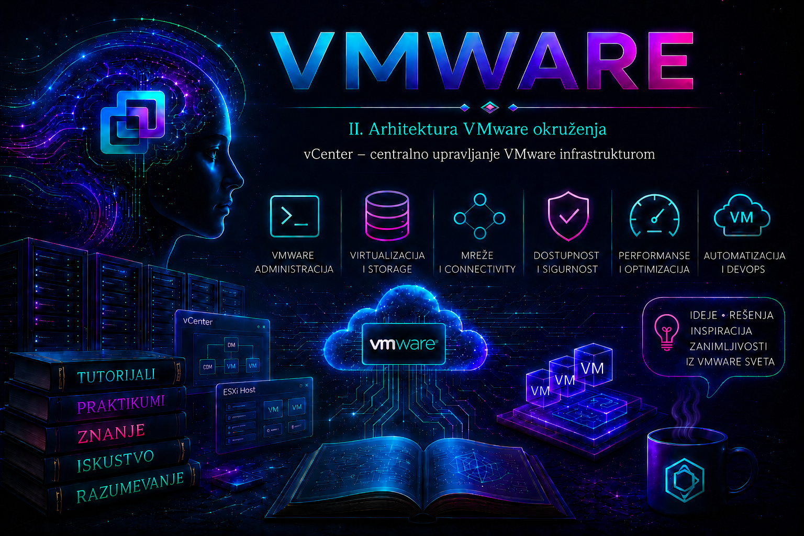

VMware

Prethodna lekcija predstavila je ESXi kao hipervizor koji neposredno izvršava virtuelne mašine. Jednim ESXi hostom moguće je upravljati preko njegovog lokalnog Host Client interfejsa, ali se takav model brzo pretvara u skup odvojenih konfiguracija, naloga i evidencija. Kada okruženje dobije više hostova, zajednički storage, veći broj mreža, desetine ili stotine virtuelnih mašina i više administratorskih timova, potreban je jedinstven upravljački sloj. Tu ulogu ima vCenter Server.
vCenter Server je centralna management plane komponenta VMware vSphere infrastrukture. On održava inventar i konfiguracione podatke, koordinira operacije između hostova, primenjuje dozvole i politike, prikuplja događaje i statistiku, izlaže API i omogućava funkcije koje ne postoje pri izolovanom upravljanju hostovima. Ne izvršava korisničke virtuelne mašine i ne zamenjuje ESXi: ESXi predstavlja izvršni sloj, a vCenter upravljački sloj.
Zato kvar vCenter-a po pravilu ne gasi VM-ove koji već rade. Hostovi nastavljaju da ih izvršavaju, a distribuirani virtualni switch zadržava postojeću prosleđivačku konfiguraciju na hostovima. Ipak, gubitak vCenter-a nije bezazlen: centralni inventar i vSphere Client nisu dostupni, API automatizacija i deo backup poslova mogu stati, nove vMotion i DRS operacije ne mogu se normalno pokretati, a menjanje distribuirane mrežne konfiguracije postaje ograničeno. vSphere HA može reagovati na kvar hosta oslanjajući se na agente i stanje klastera, ali administrator tokom incidenta mora tačno razlikovati rad VM-ova od dostupnosti upravljanja.
Šta vCenter Server omogućava
Centralizacija nije samo objedinjeni ekran. vCenter pruža zajednički inventar, transakcioni i audit kontekst i tačku na kojoj se primenjuju organizacione politike. Preko njega administrator može da:
- dodaje ESXi hostove i organizuje ih u datacentre, foldere i klastere;
- kreira, klonira, migrira, registruje i nadgleda virtuelne mašine;
- upravlja datastore objektima, standardnim i distribuiranim mrežama i resource pool objektima;
- delegira pristup kroz uloge, privilegije i dozvole uz nasleđivanje kroz inventar;
- prati zadatke, događaje, alarme, performanse i istoriju promena;
- koristi Content Library za kontrolisanu distribuciju OVF/OVA sadržaja, VM šablona, ISO slika i drugih artefakata;
- upravlja željenim stanjem i životnim ciklusom podržanih hostova kroz vSphere Lifecycle Manager;
- izlaže vSphere API i omogućava automatizaciju alatima kao što su VCF PowerCLI, SDK-ovi i sistemi trećih strana;
- integriše backup, monitoring, orkestraciju, bezbednosne i cloud platforme koje koriste vCenter kao kontrolnu tačku.
Funkcije kao što su vMotion, Storage vMotion, vSphere HA, DRS, vSphere Distributed Switch, Host Profiles i deo Lifecycle Manager mogućnosti zavise od vCenter-a i odgovarajuće licence ili pretplate. Tačna prava korišćenja i dostupnost funkcija menjala su se kroz izdanja i Broadcom modele pakovanja, pa se produkcioni dizajn ne zasniva na staroj tabeli licenci iz tutorijala ili bloga, već na aktuelnom entitlement-u organizacije, Product Interoperability Matrix-u i dokumentaciji konkretnog build-a.
Inventar i hijerarhija objekata
vCenter prikazuje infrastrukturu kroz više inventarskih pogleda: Hosts and Clusters, VMs and Templates, Storage i Networking. Objekti nisu samo fascikle na ekranu; njihova pozicija određuje gde se mogu primeniti dozvole, alarmi i pojedine politike. Tipična pojednostavljena hijerarhija izgleda ovako:
vCenter Server
└── Datacenter
├── Cluster
│ ├── ESXi host
│ │ └── Virtual machine
│ └── Resource pool
├── VM and Template folder
├── Datastore / Datastore cluster
└── Network / Distributed virtual switchJedan VM istovremeno pripada različitim logičkim pogledima: nalazi se na određenom hostu i datastore-u, povezan je na mrežu i može biti smešten u VM folder. Zbog toga se RBAC ne projektuje napamet. Dozvola dodeljena na parent objektu može se naslediti na veliki deo inventara, dok operacija nad VM-om može zahtevati privilegije i na odredišnom hostu, resource pool-u, datastore-u i mreži. Folder nije bezbednosna granica sam po sebi; granicu čine pravilno dodeljene privilegije, opseg i kontrolisano nasleđivanje.
Arhitektura savremenog vCenter Server Appliance-a
U podržanim savremenim izdanjima vCenter se isporučuje kao vCenter Server Appliance (VCSA), unapred pripremljena virtuelna mašina zasnovana na VMware Photon OS-u. Windows instalacija vCenter Server-a istorijski je postojala, ali je ukinuta; počev od vSphere 7.0 appliance je jedini model implementacije. Spoljni Platform Services Controller takođe je istorijski model: njegove funkcije su objedinjene u appliance-u, što smanjuje broj čvorova i složenost životnog ciklusa.
Appliance obuhvata više međuzavisnih komponenti:
| Komponenta | Uloga | Tipičan trag pri problemu |
|---|---|---|
vmware-vpxd |
Glavni vCenter servis: inventar, zadaci i komunikacija sa hostovima i drugim servisima. | Neuspele inventarske operacije; /var/log/vmware/vpxd/vpxd.log. |
| vSphere Client | HTML5 korisnički interfejs za administraciju. | Greška 503 ili no healthy upstream; logovi u /var/log/vmware/vsphere-ui/. |
| vPostgres | Ugrađena baza inventara, konfiguracije, zadataka, događaja i statistike. | Spor rad, servisi koji se ne pokreću ili alarm particije baze; /var/log/vmware/vpostgres/. |
| vCenter Single Sign-On | Autentikacija, tokeni, solution users i SSO domen. | Neuspešna prijava, token ili certificate greške; vmdir i STS logovi. |
VMware Directory Service (vmdir) |
Čuva SSO konfiguraciju i replikuje je između vCenter čvorova u istom SSO domenu. | Problemi replikacije ili identiteta; /var/log/vmware/vmdird/. |
| VMware Certificate Authority (VMCA) i VECS | Izdavanje i skladištenje Machine SSL i solution-user sertifikata i trust materijala. | Istek sertifikata, TLS ili start-up greške; sertifikati se proveravaju podržanim alatima, ne ručnim brisanjem store-a. |
| vSphere Lifecycle Manager | Željeno stanje, slike, baseline nasleđe i remediation hostova, zavisno od verzije i klastera. | Compliance i remediation greške u Lifecycle Manager prikazu i odgovarajućim logovima. |
Servisima upravlja VMware Service Lifecycle Manager (vMon). Komande service-control i vmon-cli služe za kontrolisanu proveru i upravljanje servisima; nisu zamena za razumevanje zavisnosti. Nasumičan restart svih servisa može ukloniti simptom i istovremeno uništiti važan vremenski trag incidenta.
Interfejsi za upravljanje: vSphere Client, VAMI, konzola i API
| Interfejs | Namena | Tipičan pristup |
|---|---|---|
| vSphere Client | Inventar, VM, hostovi, klasteri, mreža, storage, dozvole, alarmi i politike. | https://vcsa-fqdn/ui |
| VAMI | Stanje appliance-a, mreža, vreme, syslog, backup, update i servisni pregled. | https://vcsa-fqdn:5480 |
| DCUI / VM Console | Break-glass pristup osnovnoj mrežnoj i servisnoj dijagnostici kada web interfejs nije dostupan. | Konzola VCSA virtuelne mašine. |
| Appliance Shell / Bash | Podržana dijagnostika, logovi i ograničene administrativne operacije. | SSH se uključuje samo kada je potreban i ponovo isključuje prema politici. |
| API i VCF PowerCLI | Ponovljiva automatizacija, izveštavanje i integracije. | Namenski servisni nalog, najmanje privilegije i validan TLS lanac. |
VAMI i vSphere Client nisu isti upravljački sloj. Ako je /ui nedostupan, VAMI može i dalje raditi i pokazati health appliance-a; obrnuto, problem na portu 5480 ne dokazuje da je vpxd pao. Ta razlika je dragocena pri određivanju obima incidenta.
DNS, vreme, mreža i kapacitet kao arhitektonske zavisnosti
Produkcioni vCenter mora imati statičku adresu, stabilan FQDN, ispravan forward i reverse DNS i pouzdanu vremensku sinhronizaciju. FQDN postaje deo identiteta sistema i sertifikata; naknadna promena hostname-a, IP adrese ili SSO dizajna nije obična kozmetička izmena. Pre implementacije proveravaju se A/AAAA i PTR zapisi sa istih DNS resolvera koje će koristiti appliance i ESXi hostovi. Neusklađeno vreme izaziva greške tokena, autentikacije, sertifikata, korelacije logova i replikacije.
Management mreža treba da omogući dokumentovane tokove između administratora, vCenter-a, ESXi hostova, DNS/NTP/SMTP/syslog/backup odredišta i integrisanih proizvoda. Pravilo „otvori sve portove između VLAN-ova” olakšava laboratoriju, ali slabi segmentaciju i audit. Produkcioni firewall se gradi prema zvaničnoj port matrici za konkretno izdanje i stvarno omogućene integracije.
VCSA se pri instalaciji bira prema veličini inventara i očekivanoj statistici. Premali appliance dovodi do pritiska na CPU, memoriju i bazu; preveliki nepotrebno rezerviše resurse. Izbor Tiny/Small/Medium/Large/X-Large i storage profila mora se proveriti u Configuration Maximums dokumentu konkretnog izdanja. Virtualni diskovi imaju odvojene funkcije i mount tačke, pa ukupno slobodno mesto ne govori koja je particija ugrožena. Posebno se prate /storage/log, /storage/db, /storage/core, /storage/archive i ostale VCSA particije.
Single Sign-On, identiteti i RBAC
vCenter Single Sign-On domen, često inicijalno nazvan vsphere.local, nije isto što i DNS ili Microsoft Active Directory domen. SSO pruža autentikaciju servisima i korisnicima, Security Token Service izdaje tokene, a vmdir čuva relevantnu konfiguraciju. Administrator SSO domena ima izuzetno široka prava nad identitetom platforme i njegov nalog ne treba koristiti za svakodnevne VM operacije.
Spoljni direktorijum može se povezati podržanim identity provider/identity source modelom konkretnog izdanja. U vSphere 8 okruženjima klasični Integrated Windows Authentication je zastareo model; za AD over LDAP koristi se TLS i validacija sertifikata, a federacija sa podržanim pružaocem identiteta projektuje se prema aktuelnoj dokumentaciji. Običan LDAP bez TLS-a izlaže akreditive i nije prihvatljiva produkciona praksa. Kompatibilnost se mora proveriti pre upgrade-a, jer se identitetske mogućnosti menjaju između glavnih izdanja i VCF pakovanja.
Autorizacija se zasniva na modelu korisnik ili grupa + uloga + objekat + nasleđivanje. Preporučuje se dodela uloga grupama iz direktorijuma, a ne pojedinačnim nalozima; odvojeni administratorski, auditorski i servisni identiteti; najmanje privilegije; vremenski ograničen privilegovan pristup kada je moguć; i redovna recertifikacija članstva. Global Permissions imaju širi domet od običnih inventarskih dozvola i dodeljuju se samo uz posebno opravdanje.
Upozorenje: vCenter snapshot nije strategija backup-a
Snapshot VCSA virtuelne mašine može biti kratkotrajna, verzijski podržana zaštitna tačka pre određene promene, ali nije zamena za file-based backup. Dugotrajni snapshot povećava rizik i potrošnju datastore-a. U Enhanced Linked Mode grupi nekonzistentni snapshot-i mogu vratiti samo deo distribuiranog SSO stanja i izazvati probleme replikacije. Pre snapshot postupka proveravaju se zvanične smernice konkretnog izdanja, a snapshot se uklanja čim se promena potvrdi.
Sertifikati i poverenje
vCenter koristi Machine SSL sertifikat za spoljne TLS veze i više solution-user sertifikata za međuservisnu autentikaciju. VMCA može raditi sa podrazumevanim lancem ili u podržanoj integraciji sa organizacionim PKI-jem. Cilj nije samo ukloniti upozorenje pregledača: potrebno je dokumentovati vlasništvo nad CA lancem, SAN imena, rokove važenja, postupak obnove i zavisnosti integrisanih sistema.
Istek STS ili drugih ključnih sertifikata može sprečiti prijavu i pokretanje servisa. Administrator zato vodi evidenciju i alarme pre isteka, koristi podržane alate kao što su vSphere Client, Certificate Management, certificate-manager ili Broadcom-ov vCert kada dokumentacija nalaže, i pre state-changing popravke pravi validan backup. Ručno brisanje zapisa iz VECS store-a ili slepo kopiranje komandi iz KB članka za drugi build može pogoršati stanje.
Dostupnost, backup i oporavak
Osnovna zaštita je pravilno postavljen VCSA na pouzdanoj infrastrukturi, nadziran storage i redovan file-based backup konfiguracije i inventarskih podataka na nezavisno odredište. Backup se podešava u VAMI-ju, ručno ili po rasporedu, koristeći protokol podržan u konkretnom izdanju. Šifrovanje backup-a štiti osetljive podatke, ali lozinka mora biti sačuvana u odobrenom sistemu za tajne; bez nje restore nije moguć.
Restore se ne radi prostim vraćanjem datoteka u postojeći appliance. Instalacioni medij odgovarajućeg izdanja pokreće dvostepeni postupak: najpre se raspoređuje novi appliance, zatim se u njega uvoze podaci iz backup-a. Potrebni su kompatibilan build, dostupno backup odredište, mrežni i DNS preduslovi i dovoljno resursa. Backup koji nikada nije testiran predstavlja pretpostavku, ne dokaz oporavljivosti.
vCenter High Availability (VCHA) u izdanjima koja ga podržavaju koristi Active, Passive i Witness čvor i zasebnu HA mrežu. Može smanjiti prekid pri kvaru aktivnog čvora, ali ne štiti od logičke korupcije, pogrešne administrativne promene, kompromitovanih privilegija ili katastrofe koja zahvati zajedničke zavisnosti. VCHA nije zamena za backup i zahteva proveru podrške, topologije, latencije, resursa, lifecycle ograničenja i postupka održavanja za konkretan build.
Enhanced Linked Mode (ELM) omogućava jedinstven pregled više vCenter instanci u istom SSO domenu i replikuje SSO podatke između njih. ELM nije HA za inventar: svaka instanca i dalje upravlja sopstvenim hostovima i čuva sopstvenu vCenter bazu. Ako jedna instanca otkaže, druga je automatski ne preuzima kao zamenski vCenter. Broj podržanih instanci i topologija proveravaju se u Configuration Maximums i Product Interoperability Matrix dokumentima izabranog izdanja.
Licenciranje, verzije i interoperabilnost
vCenter mora biti verzijski kompatibilan sa hostovima i proizvodima kojima upravlja. Uobičajeno je da noviji vCenter tokom kontrolisanog upgrade-a upravlja podržanim starijim ESXi verzijama, ali obrnuti smer nije opšte pravilo. Pre promene proveravaju se matrice za vCenter–ESXi, backup proizvod, NSX, vSAN, SRM/Live Site Recovery, plug-in komponente, hardware management dodatke i VCF release. Ne pretpostavlja se kompatibilnost samo zato što se proizvod može povezati.
Terminologija i pakovanje promenili su se nakon prelaska VMware portfolija pod Broadcom. vSphere 8 dokumentacija i dalje koristi vCenter Server/VCSA terminologiju, dok VCF 9.x dokumentacija vCenter posmatra unutar šireg VMware Cloud Foundation životnog ciklusa. Instalacioni i upgrade tok mogu zavisiti od toga da li je okruženje samostalni vSphere/VVF sistem ili deo VCF instance kojom upravlja odgovarajući lifecycle alat. Zato se ova lekcija oslanja na stabilne arhitektonske principe, a tačni koraci implementacije uvek vezuju za izdanje i entitlement.
Bezbedno korišćenje CLI-ja i servisnih komandi
Sledeće komande izvršavaju se na VCSA appliance-u kao root, kroz appliance shell ili Bash kada je omogućen. Prva grupa samo čita stanje i pogodna je za početno prikupljanje dokaza:
# READ-ONLY: verzija i build appliance-a
cat /etc/vmware/.buildInfo
# READ-ONLY: status svih registrovanih vCenter servisa
service-control --status --all
# READ-ONLY: prostor po filesystem-u i osnovno memorijsko stanje
df -h
free -h
# READ-ONLY: najveći direktorijumi prvog nivoa na log particiji
du -x -h --max-depth=1 /storage/log 2>/dev/null | sort -h
# READ-ONLY: poslednjih 100 linija glavnog vCenter loga
tail -n 100 /var/log/vmware/vpxd/vpxd.log
du na velikom ili opterećenom filesystem-u može trošiti I/O, pa se koristi promišljeno. Ako je particija puna, prvo se identifikuje generator podataka i proverava zvanični KB; ne brišu se proizvoljno baza, core fajlovi ili aktivni logovi. Log bundle takođe zahteva slobodan prostor i na već popunjenoj /storage/log particiji može pogoršati incident.
Sledeće komande menjaju stanje servisa. Koriste se tek posle backup-a kada je potreban, evidentiranja stanja, procene uticaja i potvrđene hipoteze:
# STATE-CHANGING: pokretanje samo glavnog vCenter servisa
service-control --start vmware-vpxd
# STATE-CHANGING: zaustavljanje samo glavnog vCenter servisa
service-control --stop vmware-vpxd
# STATE-CHANGING I ŠIROK UTICAJ: restart svih servisa
service-control --stop --all
service-control --start --all
Poslednji par privremeno prekida upravljačke funkcije celog vCenter-a i nije prva troubleshooting mera. Uspeh se ne zaključuje samo iz izlaza komande: ponovo se proverava service-control --status --all, prijava u vSphere Client, inventar, komunikacija sa hostovima, alarmi i relevantan log u vremenskom intervalu intervencije.
VCF PowerCLI i API automatizacija
VMware PowerCLI se u aktuelnoj dokumentaciji distribuira u okviru VCF PowerCLI porodice modula. Sledeći primer je read-only i izvršava se sa administratorske radne stanice. U produkciji se koristi nalog sa najmanjim potrebnim privilegijama, a sertifikat se validira kroz pouzdan CA lanac; globalno ignorisanje nevažećih sertifikata nije preporučeno rešenje.
# READ-ONLY: povezivanje i sažet inventarski pregled
$vCenter = Connect-VIServer -Server "vcsa01.lab.example"
Get-Datacenter -Server $vCenter |
Select-Object Name
Get-Cluster -Server $vCenter |
Select-Object Name, HAEnabled, DrsEnabled
Get-VMHost -Server $vCenter |
Select-Object Name, ConnectionState, PowerState, Version, Build
Get-VM -Server $vCenter |
Group-Object PowerState |
Select-Object Name, Count
Disconnect-VIServer -Server $vCenter -Confirm:$falseOčekuje se uspešna TLS sesija i objekti iz vCenter inventara. Ako prijava radi u GUI-ju, a PowerCLI ne radi, proveravaju se DNS, vreme, proxy, sertifikacioni lanac, PowerCLI verzija, identitet koji se koristi i opseg privilegija. Lozinka se ne upisuje u skriptu niti istoriju shell-a; koristi se interaktivni unos, bezbedan credential store ili odobreni secrets sistem.
Logovi, događaji i korelacija dokaza
VCSA logovi se u savremenom appliance-u nalaze uglavnom ispod /var/log/vmware/<service>. Za istragu se prvo beleže vremenska zona, tačno vreme simptoma, korisnik, ciljni objekat, Task/Event identifikator i poslednja promena. Tek zatim se pretražuju logovi. Jedna reč kao error daje previše šuma; bolji su FQDN hosta, VM MoRef, korisničko ime, task ID ili poruka iz UI-ja.
| Izvor | Šta proveravati | Korelacija |
|---|---|---|
/var/log/vmware/vpxd/vpxd.log |
Inventarske operacije, host komunikacija, task greške i servisne zavisnosti. | vSphere Tasks/Events i ESXi hostd.log/vpxa.log. |
/var/log/vmware/vsphere-ui/ |
UI inicijalizacija, plug-in i backend greške. | Status vsphere-ui servisa, reverse proxy i browser developer log. |
/var/log/vmware/vmdird/ i SSO/STS logovi |
Replikacija, autentikacija, tokeni i directory greške. | NTP, DNS, stanje sertifikata i identity provider logovi. |
| VAMI Health i vSphere alarmi | CPU, memorija, baza i zauzeće pojedinačnih particija. | df -h, rast direktorijuma, promena log nivoa ili integracija koja generiše događaje. |
| Tasks and Events | Ko je pokrenuo operaciju, kada, nad kojim objektom i sa kojim rezultatom. | RBAC, API/PowerCLI audit i log ciljne komponente. |
Tipični kvarovi i redosled dijagnostike
| Simptom | Verovatne grane uzroka | Prve bezbedne provere | Trajna mera |
|---|---|---|---|
503 Service Unavailable ili no healthy upstream |
Servis nije pokrenut, puna particija, problem baze, sertifikata ili resursa. | Ping nije dokaz; proveriti DNS/TLS, VAMI, VM konzolu, df -h, status servisa i vremenski usklađene logove. |
Otkloniti osnovni uzrok; kapacitet, sertifikate ili lifecycle problem, pa validirati sve servise. |
| Host je Disconnected ili Not Responding | Management mreža, DNS, cert trust, hostd/vpxa, firewall ili opterećen host. |
Proveriti VM workload, ICMP samo kao jedan signal, TCP tokove, Host Client, događaje i host logove. | Popraviti mrežu/DNS/agent uz kontrolisano reconnect; ne uklanjati host iz inventara bez procene posledica. |
| Prijava ne uspeva | Identity source, zaključan nalog, vreme, STS/certificate problem ili pogrešan format imena. | Uporediti lokalni SSO break-glass nalog i spoljni identitet; proveriti NTP, servisni status i identity provider. | Obnoviti podržanu federaciju/LDAP trust konfiguraciju i uvesti nadzor sertifikata. |
| VCSA particija se puni | Rast logova, core dump, baza/statistika, neuspešna rotacija ili proizvod koji generiše petlju događaja. | df -h, VAMI alarm, veličina direktorijuma i poslednje promene log nivoa. |
Otkloniti generator, primeniti relevantan KB ili podržano proširenje; ne brisati nasumično. |
Praktikum: uvođenje vCenter-a i dokaz operativne spremnosti
Cilj: u kontrolisanoj laboratoriji proveriti preduslove VCSA, upoznati upravljačke interfejse, formirati osnovni inventar, dodati ESXi host, potvrditi RBAC i automatizovani read-only pristup, zatim sprovesti bezbednu dijagnostiku simuliranog incidenta. Vežba ne zamenjuje zvanični Installation and Setup vodič za izabrani build.
Topologija i početno stanje
Administratorska stanica: admin01.lab.example
DNS/NTP: infra01.lab.example
vCenter FQDN: vcsa01.lab.example
ESXi host: esx01.lab.example
Management mreža: 192.0.2.0/24 (laboratorijski primer)
Backup odredište: nezavisno od VCSA datastore-aPotrebni su podržani ESXi host i klijentski sistem, instalacioni ISO istog planiranog vCenter izdanja, kompatibilnost potvrđena u Broadcom matrici, statička IP adresa, ispravni DNS zapisi, NTP, dovoljno CPU/RAM/storage resursa, administratorski nalog za početnu implementaciju i dokumentovana laboratorijska lozinka. Za produkciju se dodatno zahtevaju change zapis, vlasnik usluge, firewall matrica, backup/RTO plan, monitoring i bezbedno čuvanje tajni.
Vežba 1 – validacija preduslova pre implementacije
- Sa administratorske stanice proveriti forward i reverse rezoluciju za vCenter i ESXi. Rezultat mora biti jednoznačan i podudaran sa planiranim FQDN-om.
- Proveriti vremenski izvor i odstupanje na ESXi hostu, DNS/NTP infrastrukturi i administratorskoj stanici.
- U Product Interoperability Matrix-u potvrditi kombinaciju vCenter-a, ESXi build-a i dodatnih proizvoda. U Configuration Maximums proveriti veličinu inventara i odabrati VCSA deployment size.
- Dokumentovati management IP, gateway, DNS resolvere, NTP, SSO domain name, site name, backup lokaciju, potrebne portove i rollback odluku.
# READ-ONLY; Linux administratorska stanica
getent hosts vcsa01.lab.example
getent hosts esx01.lab.example
# Reverse lookup; zameniti laboratorijskom adresom
nslookup 192.0.2.20
# TLS port vSphere Client-a; potvrđuje samo TCP dostupnost, ne zdravlje servisa
nc -vz vcsa01.lab.example 443Kriterijum završetka: nema nerešenog DNS/NTP ili compatibility odstupanja i dizajn je zabeležen pre pokretanja instalera. Ako PTR nije ispravan ili se FQDN razrešava na pogrešnu adresu, instalacija se ne „forsira”; ispravlja se infrastruktura imena.
Vežba 2 – implementacija i početna validacija appliance-a
- Pokrenuti podržani VCSA installer sa instalacionog medija. U prvoj fazi izabrati ciljni ESXi ili postojeći vCenter, deployment size i storage size prema prethodnoj proceni, zatim uneti FQDN, IP, gateway i DNS.
- U drugoj fazi podesiti NTP, SSO domen i početni SSO administratorski identitet. Ne koristiti korporativni AD naziv kao SSO domain samo zato što zvuči poznato.
- Po završetku otvoriti VAMI na portu 5480 i vSphere Client na
/ui. Zabeležiti verziju/build, health svih prikazanih komponenti, vremensku konfiguraciju i stanje backup rasporeda. - U vSphere Client-u proveriti Administration prikaze za licence, sertifikate, Single Sign-On i System Configuration. U ovoj vežbi ne menjati sertifikate niti dodavati identity source.
Očekivani rezultat: oba web interfejsa su dostupna validnim FQDN-om, vreme je usklađeno, kritični health indikatori su zeleni i nema alarma o particijama. Rollback neuspele laboratorijske instalacije jeste uklanjanje samo novog VCSA VM-a nakon što se proveri da nije preuzeo produkcione hostove ili jedinstvene podatke; produkcioni rollback se unapred definiše prema fazi instalacije/migracije i zvaničnom vodiču.
Vežba 3 – inventar, ESXi host i provera dozvola
- Kreirati Datacenter objekat
DC-LAB, a u njemu folder ili klaster prema laboratorijskom planu. Ne uključivati HA/DRS dok mreža, storage i licenca nisu pripremljeni. - Izabrati Add Host, navesti
esx01.lab.example, proveriti prikazani certificate thumbprint nezavisnim kanalom i uneti namenski administratorski kredencijal hosta. - Pregledati upozorenja o VM-ovima, mreži, licenci i lockdown stanju pre završetka čarobnjaka.
- Potvrditi da je host Connected, da se postojeći VM-ovi vide i da datastore/mrežni objekti odgovaraju stvarnom hostu.
- Kreirati laboratorijsku read-only ulogu ili koristiti postojeću Read-only ulogu, dodeliti je test grupi na
DC-LABuz promišljeno nasleđivanje, prijaviti se test nalogom i dokazati da pregled radi, a promena VM power stanja nije dozvoljena.
Dodavanje hosta menja stanje: vCenter na host instalira/konfiguriše management agente i preuzima ga u inventar. U produkciji se pre toga proveravaju backup poslovi, monitoring integracije, licenca, naziv i adresa hosta i mogućnost da je već pod upravljanjem druge vCenter instance. Host se ne dodaje opcijom koja ignoriše certificate proveru bez dokumentovanog razloga.
Vežba 4 – PowerCLI dokaz i izvoz početnog stanja
Izvršiti prethodni read-only PowerCLI primer i sačuvati rezultat u change evidenciji. Dodatno proveriti alarme i poslednje događaje bez menjanja inventara:
$vCenter = Connect-VIServer -Server "vcsa01.lab.example"
$snapshot = [ordered]@{
CollectedAt = (Get-Date).ToString("o")
vCenter = $vCenter.Name
Hosts = @(Get-VMHost -Server $vCenter).Count
VMs = @(Get-VM -Server $vCenter).Count
Datastores = @(Get-Datastore -Server $vCenter).Count
}
$snapshot | ConvertTo-Json
Get-VIEvent -Server $vCenter -MaxSamples 20 |
Select-Object CreatedTime, UserName, FullFormattedMessage
Disconnect-VIServer -Server $vCenter -Confirm:$falseValidacija: brojevi se podudaraju sa GUI inventarom, događaji imaju očekivano vreme i korisnika, a test nalog vidi samo odobreni opseg. JSON izlaz je tehnički dokaz trenutka, ali nije backup vCenter baze.
Vežba 5 – file-based backup i dokaz restore spremnosti
- U VAMI-ju otvoriti Backup i podesiti podržano, nezavisno odredište. Uneti retention i raspored prema laboratorijskom cilju, uključiti šifrovanje ako je predviđeno i sačuvati lozinku u odobrenom secrets sistemu.
- Pokrenuti inicijalni backup i pratiti zadatak do uspešnog završetka. Potvrditi timestamp, veličinu i postojanje datoteka na odredištu nalogom koji ima samo potrebna prava.
- Dokumentovati tačan instalacioni medij/build potreban za restore, DNS/IP plan za recovery i ko ima pristup backup lozinki.
- U izolovanoj recovery vežbi, kada resursi dozvoljavaju, pokrenuti restore workflow sa instalacionog medija bez preuzimanja identiteta aktivnog produkcionog vCenter-a. Produkcioni i test obnovljeni appliance ne smeju istovremeno raditi sa istim identitetom na istoj mreži.
Kriterijum završetka: poslednji backup ima status Success, nezavisno je dostupan i postoji dokumentovan, periodično testiran restore postupak. Sam VCSA VM snapshot ne ispunjava ovaj kriterijum.
Vežba 6 – incident: vSphere Client vraća 503
Bezbedna simulacija: ne zaustavljati servise na produkciji. U laboratoriji instruktor može dati snimljen izlaz ili kontrolisano zaustaviti samo vsphere-ui servis tokom odobrenog prozora. Cilj nije naučiti „restartuj sve”, već dokazati uzrok.
- Simptom i obim: zabeležiti URL, vreme i HTTP poruku. Proveriti da li rade VAMI, SSH/konzola i direktni Host Client i da li workload VM-ovi nastavljaju rad.
- Dokazi: proveriti
df -h,free -h,service-control --status --all, odgovarajući UI ivpxdlog u istom vremenskom intervalu i poslednje promene. - Hipoteza: ako je samo
vsphere-uistopped, a prostor, baza i ostali ključni servisi zdravi, uzrok je ograničen na UI servis. Ako je particija puna ili više servisa ne radi, hipoteza se širi i restart se odlaže. - Korekcija: u laboratoriji pokrenuti samo potvrđeno zaustavljen servis:
service-control --start vsphere-ui. Ne koristiti--start --allkao prvu meru. - Validacija: proveriti status servisa, uspešnu prijavu, učitavanje inventara, komunikaciju hosta, nove greške u logu i da li se alarm vratio u zeleno stanje.
- Osnovni uzrok i trajna mera: ako je servis zaustavio instruktor, to je simulirani neposredni uzrok. U stvarnom incidentu utvrditi zašto se zaustavio: resursi, particija, certificate, update, plug-in ili bug; primeniti relevantnu zakrpu ili dizajnersku korekciju i dokumentovati nalaz.
Rollback: ako pokretanje potvrđenog servisa izazove novu grešku, ne ponavljati komandu u petlji. Sačuvati logove, vratiti laboratoriju iz validne zaštitne tačke prema scenariju ili eskalirati uz support bundle i tačan vremenski sled. Na kraju ponovo isključiti SSH ako je uključen samo za vežbu.
Administratorske prakse
- Voditi CMDB zapis o FQDN-u, IP adresi, build-u, SSO domenu, licencnom/entitlement modelu, integracijama, vlasniku i recovery zavisnostima.
- Koristiti DNS imena, redundantne DNS/NTP servise i nadzor vremenskog odstupanja; ne oslanjati se na ručne
/etc/hostsprečice kao trajni dizajn. - Zakazati šifrovani file-based backup na nezavisno odredište, nadzirati neuspehe i periodično dokazivati restore.
- Nadzirati svaku VCSA particiju, zdravlje baze, certificate rokove, stanje servisa, backup i ključne integracije; alarm bez vlasnika i procedure nije kontrola.
- Dodeljivati prava grupama kroz najmanje privilegije, odvojiti svakodnevne i SSO/break-glass naloge, štititi servisne naloge i redovno pregledati Global Permissions.
- Ograničiti SSH i Bash, koristiti ih samo tokom odobrene dijagnostike i evidentirati state-changing komande.
- Pre patch-a ili upgrade-a proveriti interoperabilnost, release notes, poznate probleme, slobodan prostor, backup, kompatibilnost plug-inova i rollback ograničenja.
- Ne koristiti restart kao dijagnozu. Najpre sačuvati događaje, metrike i logove, zatim formirati i potvrditi hipotezu.
- Ne mešati VCHA, ELM, VM snapshot i file-based backup: svaki rešava drugačiji rizik i nijedan sam ne daje potpunu otpornost.
Završna kontrolna tačka
Lekcija je savladana kada administrator može dokazivo da:
- objasni granicu odgovornosti ESXi i vCenter sloja i posledice gubitka control plane-a;
- prepozna VCSA servise, interfejse, ključne zavisnosti i odgovarajuće logove;
- projektuje osnovni inventar, DNS/NTP, RBAC, certificate i kapacitetni okvir bez oslanjanja na podrazumevane pretpostavke;
- razlikuje ELM, VCHA, file-based backup i kratkotrajni snapshot prema riziku koji svaki mehanizam pokriva;
- proveri verzijsku, proizvodnu i licencnu kompatibilnost pre implementacije ili upgrade-a;
- izvrši read-only proveru kroz GUI, VAMI, CLI i PowerCLI i koreliše rezultat sa događajima i logovima;
- za simptom 503 ili disconnected host odredi obim, prikupi dokaze, potvrdi uzrok, sprovede najmanje invazivnu korekciju i validira oporavak;
- dokumentuje RPO/RTO, uspešan backup, test restore-a, rollback i vlasništvo nad alarmima i privilegijama.
Zaključak
vCenter Server pretvara skup pojedinačnih ESXi hostova u upravljivu VMware infrastrukturu. Njegova vrednost nije samo u jednom web interfejsu, već u zajedničkom inventaru, bezbednosnom i audit modelu, koordinaciji klastera, automatizaciji, politikama životnog ciklusa i integracijama koje omogućavaju dosledan rad na enterprise nivou. Istovremeno, centralizacija stvara kritičnu zavisnost: loš DNS, vreme, sertifikati, puna particija, preširoka prava ili netestiran backup mogu zaustaviti upravljanje iako aplikacioni VM-ovi i dalje rade.
Odgovoran administrator zato ne meri zdravlje vCenter-a samo time da li se otvorila početna stranica. On zna šta se nalazi iza nje, prikuplja dokaze pre promene, razlikuje dostupnost workload-a od dostupnosti upravljanja, održava najmanje privilegije i kompatibilnost, proverava backup restore-om i projektuje oporavak prema poslovnom riziku. To razumevanje priprema čitaoca za sledeće lekcije o vSphere Client-u i organizaciji datacenter, cluster i resource pool objekata, bez prerane obrade njihovih detaljnih konfiguracija.